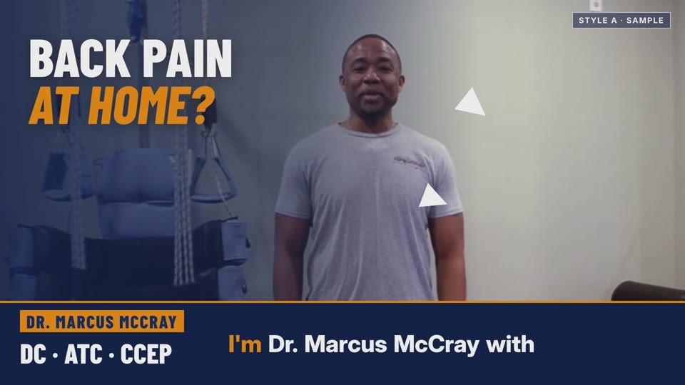
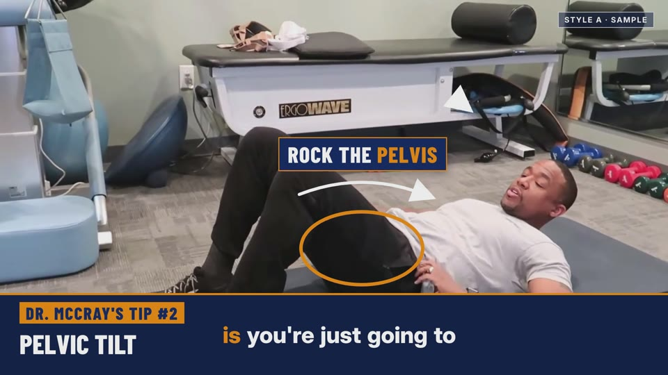
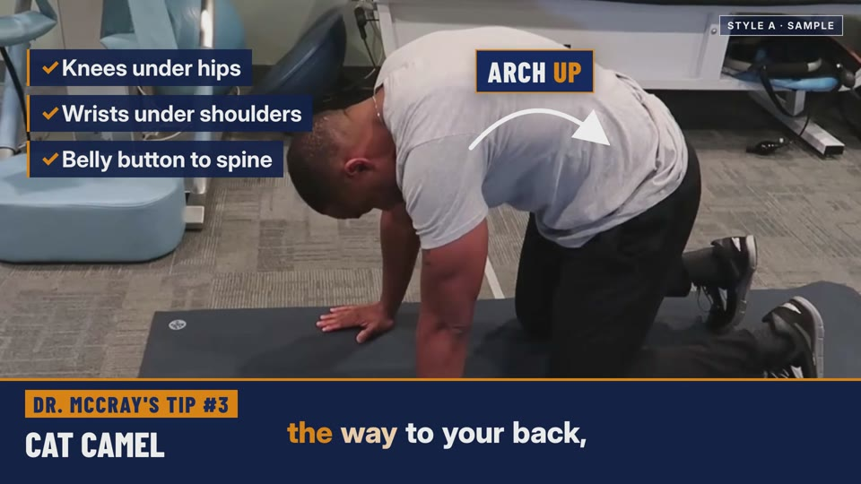
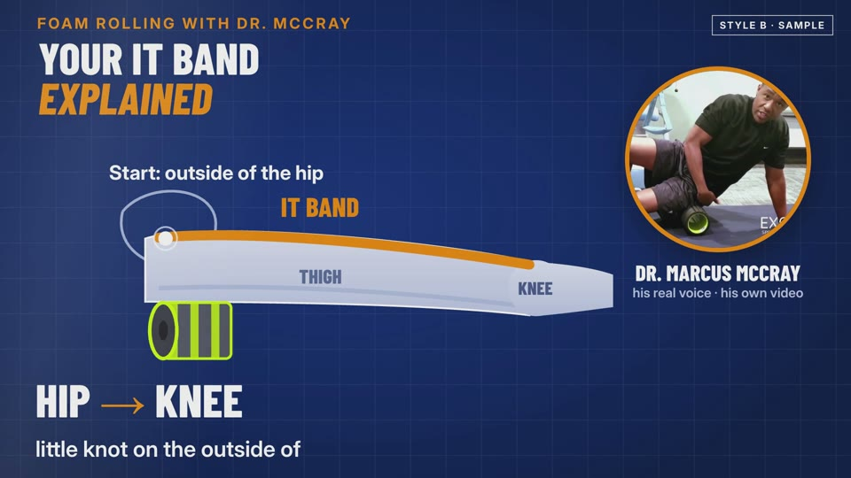
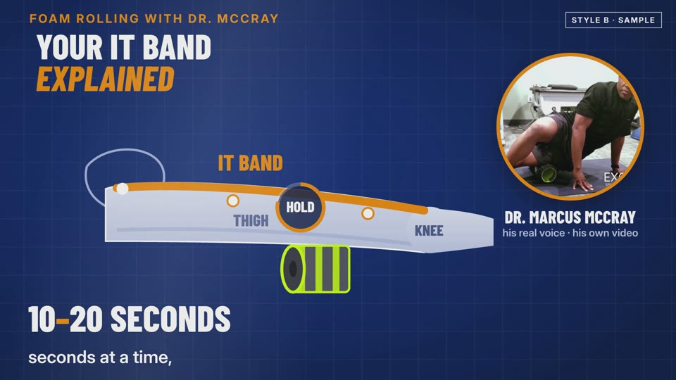
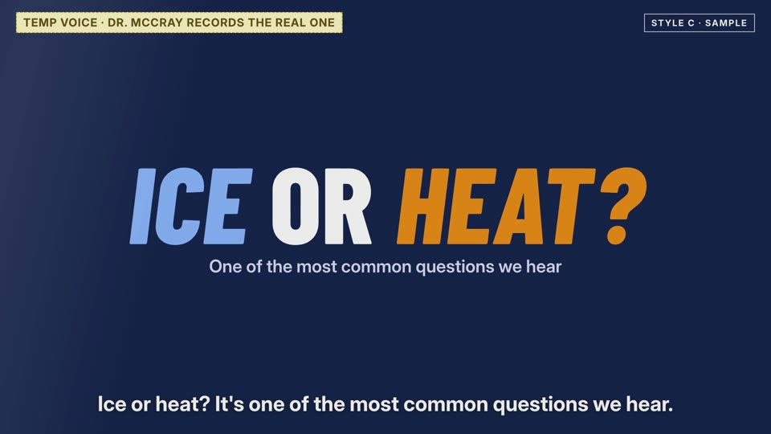
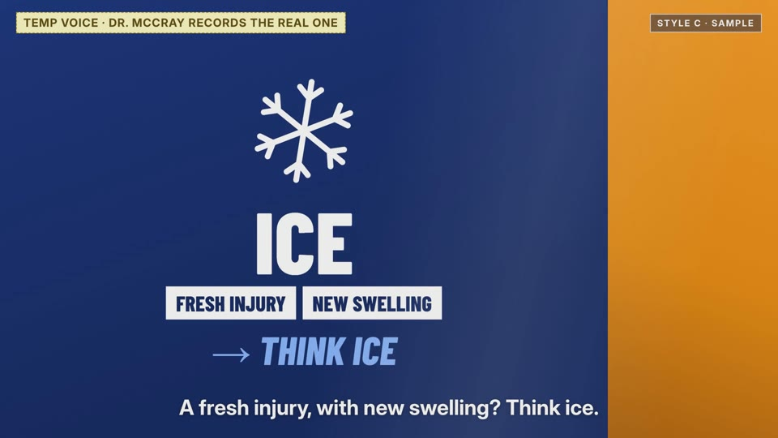
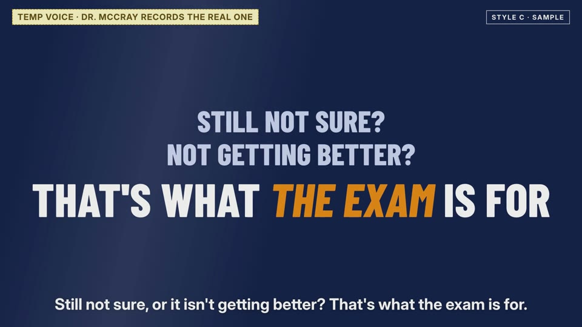

A
You on camera + smart overlays
Your real video, cut tight, with big captions that follow your words, tip numbers, and arrows and labels drawn right on the move.



Dr. McCray, you said the instructional videos were your favorite. So we took your own exercise videos and made three short samples, each in a different style. Watch them on your phone with the sound on, then tell Jimmy which one feels like you.
Your real video, cut tight, with big captions that follow your words, tip numbers, and arrows and labels drawn right on the move.



Clean animated diagrams explain what's happening inside the body while you talk, with you in a small circle in the corner.


Bold animated cards answer one question patients ask, like "Ice or heat?", in 30 seconds, then send them to book.



Tell Jimmy A, B or C, or mix them ("A for exercises, C for questions"). Then name the first 3 topics you'd want, for example: